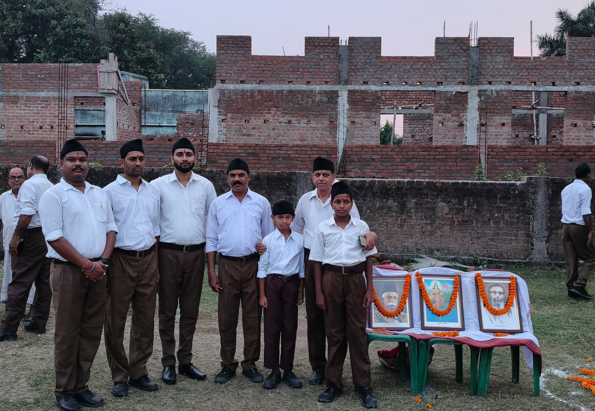

{kind=link}
{kind=link}
{kind=link}
{kind=link}
{kind=link}
Abhik Kumar MondalPublic activity update
Ground-level youth connect, public service moments, and organization updates from Asansol.
কোনো নারী বা মেয়ে বিপদে পড়লে দ্রুত জরুরি নম্বরে যোগাযোগ, লোকেশনসহ SOS মেসেজ প্রস্তুত, WhatsApp/টিম মেসেজ এবং প্রাথমিক নিরাপত্তা পরামর্শ এক জায়গা থেকে পাওয়া যাবে।
SOS চাপলে লোকেশনসহ সাহায্যের মেসেজ প্রস্তুত হবে।




Abhik Kumar Mondal works with a people-first approach to empower youth, support social awareness, encourage development, and strengthen organization across Asansol.
His leadership focuses on public service, disciplined youth participation, clean civic action, and responsive support for local communities.
From grassroots service to youth leadership, a focused journey of organization, awareness, and public work.
Started working closely with local youth, citizens, and community groups with a focus on social awareness, public support, and disciplined service.
Powerful moments from public programs, youth activities, social work, and grassroots connect.
Follow public updates from Facebook, Instagram, and X in one place.
Ground-level youth connect, public service moments, and organization updates from Asansol.
Youth leadership, public service, civic awareness, and organization work updates for Asansol.